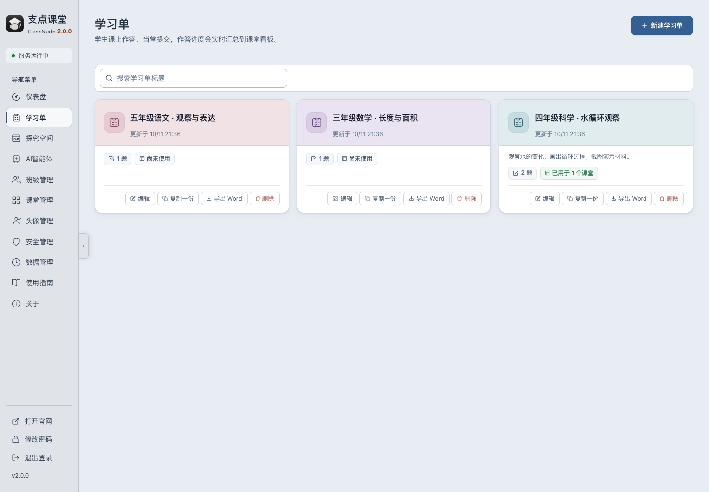
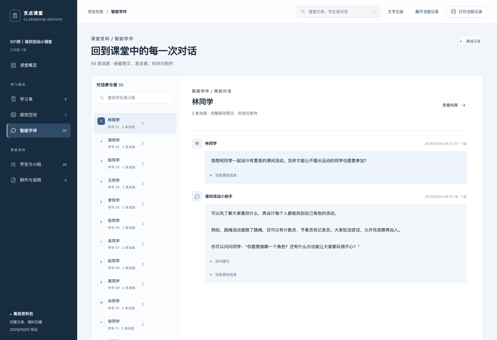
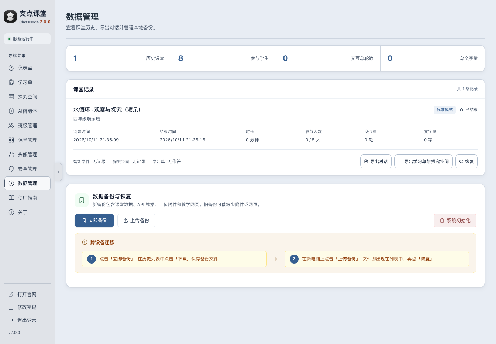

02 / 课堂功能
跟着一节课，看看怎么用
课前 准备一份学习单
把本节课要做的事安排好
在教师端新建学习单，编辑题目。题干可插入图片、公式或表格，按活动需要设置作答方式。



探究 让学生动手试，也能向学伴提问
把探究活动发到学生设备上
教师可以发布交互网页，让学生操作、观察和记录。课堂接入智能学伴后，学生还可以围绕任务提问，教师可回看对话记录。


课后 回看记录与导出
为下一次讲评留下材料
打开历史课堂，回顾参与情况和学习单作答明细。需要整理材料时，可按需导出。

